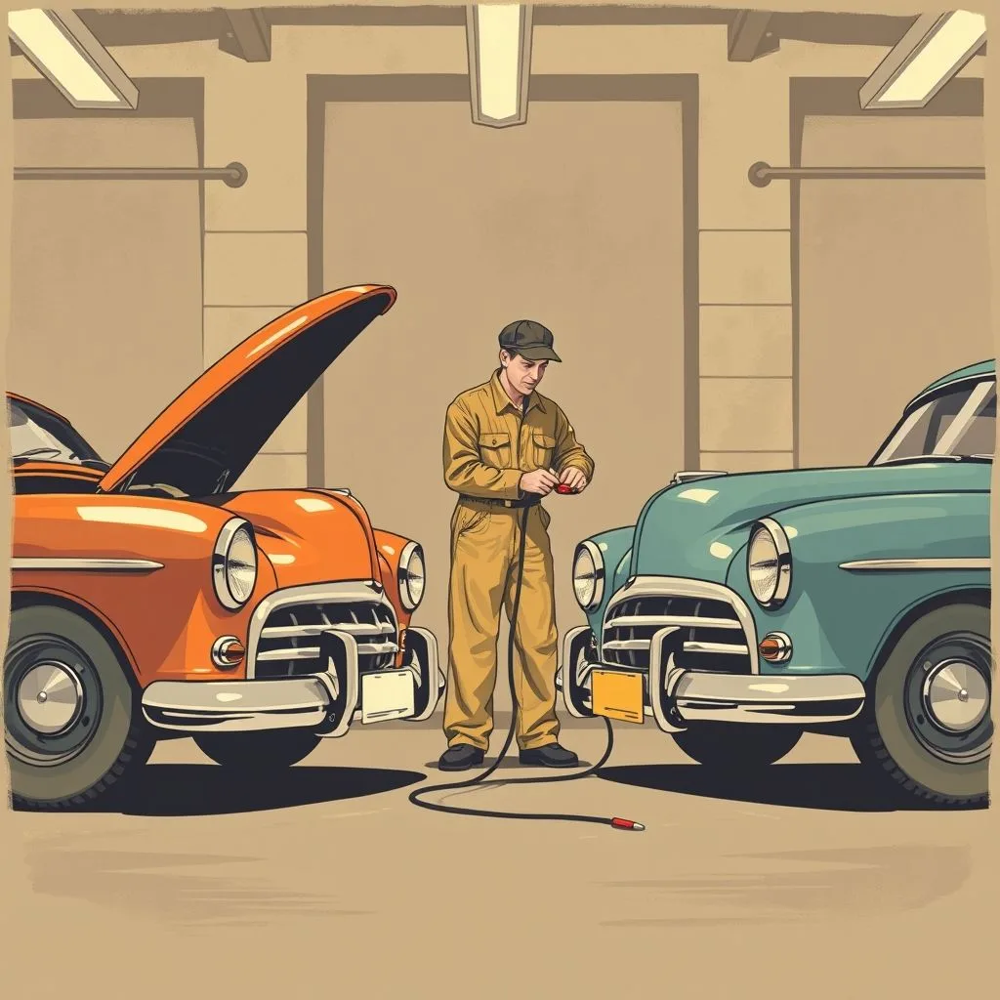
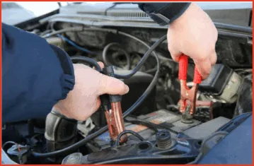
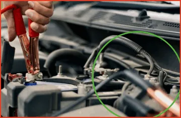

Evita Errores Costosos: Así Debes Auxiliar la Batería Correctamente
Publicado el

Las baterías de los vehículos pueden descargarse por distintas razones, como el uso prolongado de accesorios eléctricos con el motor apagado, temperaturas extremas o simplemente porque la batería ha llegado al final de su vida útil. En estos casos, el auxilio de batería con cables es una solución práctica para poder encender el vehículo nuevamente.
Materiales Necesarios
Antes de comenzar, asegúrate de tener lo siguiente:
- Cables de arranque resistentes y en buen estado.
- Un vehículo con batería cargada (vehículo auxiliar).
- Guantes y gafas de seguridad (recomendado).


Procedimiento Paso a Paso
1. Preparación
- Estaciona ambos vehículos cerca, pero sin que se toquen.
- Apaga ambos motores y verifica que todos los sistemas eléctricos estén apagados.
- Asegúrate de que la batería del vehículo auxiliar esté en buen estado.
2. Conexión de los cables
- Conecta el cable rojo (+) al borne positivo de la BATERÍA DESCARGADA
- Conecta el otro extremo del cable rojo (+) al borne positivo de la BATERÍA AUXILIAR.
- Conecta el cable negro (-) al borne negativo de la BATERÍA AUXILIAR.
- Conecta el otro extremo del cable negro (-) a una parte metálica del chasis del vehículo con la BATERÍA DESCARGADA (NO en el borne negativo directamente, para evitar chispas peligrosas).
3. Arranque del vehículo
- Enciende el vehículo auxiliar y déjalo funcionando durante 2 a 5 minutos para que transfiera carga.
- Luego, intenta encender el vehículo con la batería descargada.
- Si no arranca de inmediato, espera unos minutos y prueba nuevamente.
4. Retiro de los cables
Para quitar los cables, sigue el orden inverso:
- Desconecta primero el cable negro (-) del chasis del vehículo con batería descargada.
- Desconecta el otro extremo del cable negro (-) de la batería auxiliar.
- Desconecta el cable rojo (+) de la batería auxiliar.
- Desconecta el otro extremo del cable rojo (+) de la batería descargada.
5. Deja funcionando el vehículo
Mantén el motor encendido por al menos 20-30 minutos o conduce para permitir que el alternador recargue la batería.

Precauciones de seguridad
⚠️ Nunca permitas que los cables toquen partes móviles del motor. ⚠️ Evita tocar los bornes con las manos desnudas mientras los cables están conectados. ⚠️ Si la batería está dañada o tiene signos de corrosión severa, es mejor reemplazarla en lugar de auxiliarla.
¿Cuándo debemos reemplazar la batería?
Si notas que el arranque del vehículo es más lento, las luces se atenúan o que la batería tiene más de tres años de uso, es momento de considerar su reemplazo. Escríbenos para saber qué batería tenemos para tu vehículo.
CORCAUCHOS: Expertos en Baterías en Barquisimeto y Mantenimiento de Vehículos
Si tu batería sigue presentando problemas, escríbenos y te orientamos.
💡 ¡Visítanos y mantén tu auto siempre listo para el camino!

¿Necesitas este servicio en Barquisimeto? Escríbenos y te atendemos.
Escríbenos por WhatsApp